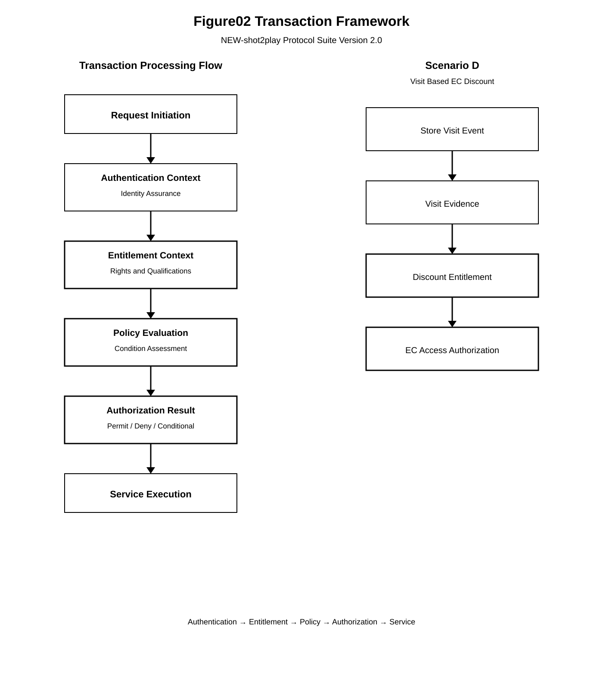

Chapter 01 — Framework Overview
This chapter defines the overall framework of the NEW-shot2play Protocol Suite Version 2.0.
Version 2.0 extends the protocol architecture established by Version 1.0 by introducing protocol-level Entitlement, Policy Evaluation, and Authorization layers above the authentication boundary.
This chapter defines the architectural framework of Version 2.0. Normative terms including MUST, SHALL, SHOULD, and MAY are to be interpreted according to their conventional specification meaning.
1.1 Scope
The NEW-shot2play Protocol Suite Version 2.0 defines a protocol architecture for establishing identity, authenticating a subject, representing entitlement, evaluating policy, generating authorization decisions, and enforcing those decisions at a service boundary.
The protocol suite is designed to separate authentication from authorization while preserving a verifiable relationship between the authenticated subject, applicable entitlement, policy conditions, authorization context, authorization decision, and service execution.
Version 2.0 applies to distributed services in which authorization may be evaluated across multiple protocol components or service boundaries.
The specification does not require a particular application domain. An implementation MAY apply the protocol to web services, mobile services, enterprise systems, transaction systems, membership systems, digital content, physical access, or other service environments.
1.2 Architectural Objective
The principal architectural objective of Version 2.0 is to prevent authentication state from being treated as a direct substitute for authorization state.
Authentication establishes that a subject has successfully satisfied an authentication procedure. Authorization determines whether that authenticated subject is permitted to perform a specific action under the applicable entitlement, policy, and context.
The resulting architectural relationship is:
Authentication
↓
Entitlement
↓
Policy Evaluation
↓
Authorization
↓
Service
The layers SHALL remain logically distinguishable even when an implementation combines multiple layers within a single software component.
1.3 Core Innovation
Version 2.0 introduces Entitlement as a protocol-level object between authenticated identity and authorization evaluation.
An Entitlement represents an independently identifiable right, eligibility, capability, usage qualification, or other condition that may contribute to an authorization decision.
The Entitlement SHALL NOT be treated merely as an implicit property of an authenticated session.
An authorization decision MAY therefore depend on an entitlement that was established by an event, transaction, service, or authentication context different from the current authorization request.
This separation permits authorization to be evaluated using business, transactional, contextual, and security state in addition to authentication state.
1.4 Protocol Layer Model
Version 2.0 defines the following logical protocol layers:
| Layer | Primary Responsibility |
|---|---|
| Identity Layer | Defines the representation and lifecycle of the subject identity. |
| Credential Layer | Defines credentials and the relationships required to establish trusted authentication material. |
| Authentication Layer | Establishes authenticated identity using the authentication protocol defined by Version 1.0 and its applicable extensions. |
| Entitlement Layer | Creates, maintains, validates, consumes, expires, and revokes Entitlement objects. |
| Policy Layer | Defines the conditions and rules used to evaluate an authorization request. |
| Authorization Layer | Combines applicable authorization inputs and produces an Authorization Decision. |
| Application Layer | Enforces the resulting authorization decision at the service boundary and performs the requested service operation. |
1.5 Overall Architecture
The overall Version 2.0 architecture is illustrated in Figure 01.

The architecture establishes a directional relationship from identity establishment through entitlement and policy evaluation to authorization and service execution.
The existence of an authenticated identity SHALL NOT by itself produce an Allow decision.
1.6 Authentication and Authorization Separation
Authentication and authorization SHALL be treated as separate logical protocol functions.
Authentication answers whether the protocol has established the identity of the requesting subject.
Authorization answers whether the authenticated subject is permitted to perform the requested action against the specified resource or service under the applicable conditions.
The separation is illustrated in Figure 02.

An implementation SHALL preserve the semantic distinction between authentication success and authorization success even where both operations are performed within the same request processing path.
1.7 Design Principles
The Version 2.0 architecture SHALL be implemented according to the following principles.
| Principle | Requirement |
|---|---|
| Separation of Authentication and Authorization | Authentication success SHALL NOT by itself establish authorization. |
| Entitlement as an Independent Object | An Entitlement SHALL remain logically distinguishable from the Authentication Object and Session Object. |
| Current-State Evaluation | Authorization evaluation SHALL use the applicable authoritative current state of required authorization inputs. |
| Context-Bound Decision | An Authorization Decision SHALL be associated with the request, applicable identity, entitlement, policy, and authorization context. |
| Decision Enforcement | A protected service SHALL enforce the applicable Authorization Decision before performing the protected operation. |
| Fail-Closed Processing | An implementation SHALL NOT produce an Allow result when a required authorization condition cannot be established reliably. |
| Traceability | Security-relevant authorization state transitions SHOULD remain traceable to their originating transaction or event. |
1.8 Protocol Object Model
Version 2.0 defines protocol objects that represent distinct security, entitlement, policy, session, and service state.
| Object | Role |
|---|---|
| Identity Object | Represents the subject identity used by the protocol. |
| Credential Object | Represents authentication credentials and associated trust information. |
| Authentication Object | Represents the result and state of an authentication operation. |
| Entitlement Object | Represents a right, capability, eligibility, or usage qualification. |
| Policy Object | Represents conditions and rules governing authorization evaluation. |
| Authorization Object | Represents the authorization request, evaluation state, and resulting decision. |
| Session Object | Represents protocol session state associated with an interaction. |
| Service Object | Represents the protected service or resource boundary. |
The objects SHALL remain semantically distinguishable even when multiple objects are represented within a common implementation record or database structure.
1.9 Event and Transaction Model
Version 2.0 treats security-relevant and entitlement-relevant events as protocol-significant state transitions.
An event MAY establish, modify, consume, revoke, invalidate, or otherwise affect an object used by authorization evaluation.
A transaction SHOULD provide sufficient information to establish the relationship between the event, affected object, subject, service, and resulting state.
Where an Entitlement is created as a consequence of a transaction, the resulting Entitlement SHALL remain traceably associated with the transaction or evidence establishing the entitlement.
Where an Entitlement is consumed, revoked, or otherwise invalidated, the resulting state change SHALL be reflected in the authoritative Entitlement state before that state is relied upon for a subsequent authorization decision.
1.10 Distributed Authorization
Version 2.0 permits authorization processing to be distributed across multiple protocol components, services, or administrative domains.
Distributed processing SHALL NOT remove the requirement for authorization consistency.
Where an Authorization Decision depends on state maintained by multiple components, the implementation SHALL establish sufficient context to determine whether the required authorization inputs are valid for the current request.
A component that cannot establish a required authorization input with sufficient confidence SHALL NOT independently convert that condition into an Allow result.
The distributed authorization architecture therefore preserves the same logical security boundary as centralized authorization processing.
1.11 Security Boundary
The protected service boundary represents the point at which an Authorization Decision becomes an enforceable security condition.
A service operation requiring authorization MUST be preceded by verification that an applicable Allow decision exists and remains valid for the requested operation.
A stale, revoked, expired, invalid, inconsistent, or otherwise unverifiable authorization state SHALL NOT be treated as an active Allow state.
This requirement applies whether the authorization decision is generated locally or obtained from another protocol component.
1.12 Relationship to Version 1.0
Version 1.0 defines the Authentication Protocol and remains the Baseline Specification and Normative Reference for authentication processing.
Version 2.0 does not replace or modify the Version 1.0 baseline. Instead, Version 2.0 defines additional protocol layers and objects that operate above the authentication boundary.
The Version 2.0 architecture therefore treats the authentication result established by Version 1.0 as an input to subsequent entitlement and authorization processing.
Version 1.0 SHALL remain unchanged.
Version 2.0 SHALL treat the Version 1.0 Authentication Protocol as a normative reference where authentication behavior is required.
1.13 Conformance Principle
An implementation conforms to the architectural framework of Version 2.0 only if it preserves the logical separation between authentication, entitlement, policy evaluation, authorization, and service enforcement.
An implementation MAY combine these functions internally, but such combination SHALL NOT alter the normative semantics defined by this specification.
In particular, an implementation SHALL NOT claim authorization solely because authentication succeeded.
1.14 Summary
Version 2.0 establishes an entitlement-centric authorization architecture in which authentication is separated from the subsequent determination and enforcement of service rights.
The architecture consists of the Identity, Credential, Authentication, Entitlement, Policy, Authorization, and Application layers.
The principal protocol relationship is:
Identity
↓
Credential
↓
Authentication
↓
Entitlement
↓
Policy Evaluation
↓
Authorization
↓
Service
The architecture requires that authorization decisions be derived from the applicable authorization inputs and enforced at the protected service boundary.
This framework provides the foundation for the detailed protocol definitions specified in the subsequent chapters.